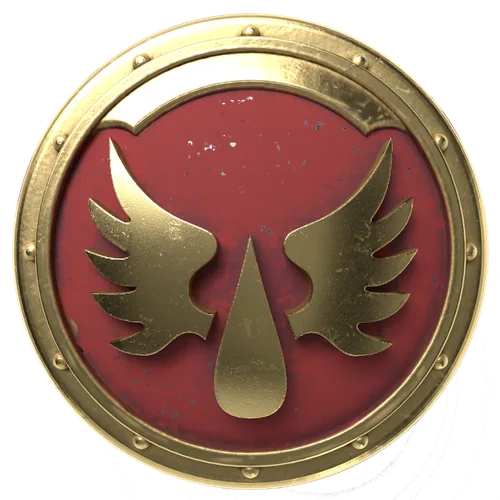

Ire Compagnie · vétérans
« Écarlate »
Compagnie de vétérans du Ier Chapitre, héritière des rites de la Grande Croisade. Elle ne combat jamais dès l'ouverture d'un assaut, mais au point où la bataille bascule.
Capitaine — Bel Sepatus

Paladins Écarlates « Malafael »
Cénacle d'éliteUn cénacle formé sur les mondes de la Grande Croisade, où l'on n'entrait qu'en remplaçant un mort. Sepatus les mène là où deux assauts ont déjà échoué ; on dit que la troisième tentative cède toujours aux Écarlates.
Escouade Vétérans Brécheuse « Ordamael »
Assaut de brècheDix vétérans en formation coin, boucliers verrouillés, un pas par seconde — une tactique que le Ier Chapitre pratique depuis les guerres de Compliance. Le feu se casse sur eux, et le Bataillon passe derrière.
Les Larmes de l'Ange « Verimus »
VétéransGuerriers réservés aux missions les plus brutales et moralement douteuses — extermination, armes interdites, anéantissement de populations jugées irrécupérables. Chaque membre, un « Erelim », incarne la colère de Sanguinius là où la pitié n'a plus sa place. Spécialistes de la guerre sale, ils dissimulent leur visage sous un masque argenté, seul signe visible d'une unité que le reste de la Légion préfère ne pas nommer autrement que Lame Brisée.